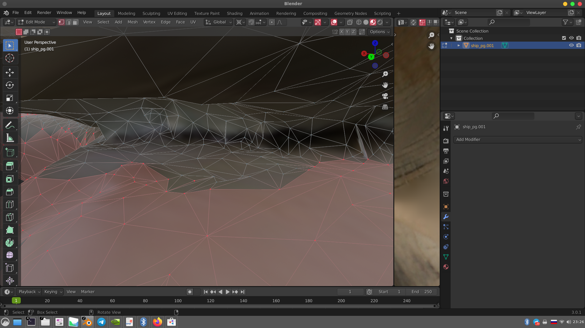
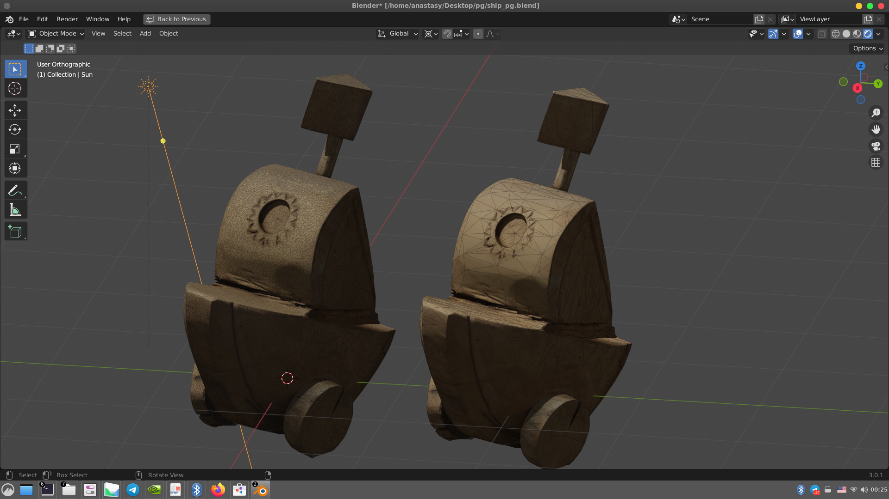
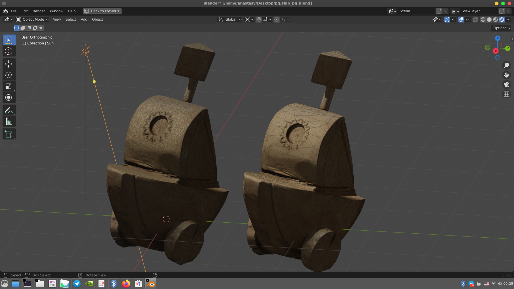

назад
Клюква: модель кораблика: подробнее о процессе:
Из фотографий была сделана первичная модель в Agisoft Metashape:
После чего она дорабатывалась в Blender, из нее были удалены лишние области, а недостающие зашиты:
Потом был сильно уменьшен вес этой модели с помощью техник работы с низкополигональными моделями (опыт в игровой индустрии), модель в результате можно смотреть даже на мобильных устройствах:
 

Количество полигонов уменьшено в 60 раз, без видимой потери качества, текстуры оптимизированы, такая модель не будет тормозить даже в AR с мобильных устройств. Или можно подгрузить сразу несколько на страницу